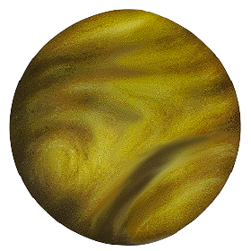

So far, we’ve used only the first three columns of the regression report: the name of the term to which the remaining entries belong, the estimate of the coefficient on that term, and the standard error of that estimate.
lm(mpg ~ wt + hp, data = mtcars) %>% broom::tidy()
There are two more columns to go. The fourth column is labelled “statistic” (short for “test statistic”) and the fifth column is the “p-value.”
It’s the p-value that concerns us here, the “statistic” is just an intermediate on the way to calculating the p-value. Both are reported because, in some fields people are accustomed to reading the statistic to draw quick conclusions. But in every field, the p-value is used.
The p-value is at once incredibly simple to interpret and impossibly difficult to make sense of. This contradiction is the reason many statisticians have called for moving away from the p-value as a summary of a result. We will discuss the reasons for the controversy in Lesson 38. In Lesson 37, we’ll show how the p-value is computed from the test statistic and introduce another report summarizing a model, the “ANOVA report,” which is useful for many purposes.
In this Lesson, we’ll explain the “incredibly simple” interpretation of the p-value and the subtle logic behind it. This is important because frequently (pretty close to “always”) people mistake the p-value as addressing a completely different question than the question it actually pertains to. It’s useful to know about this misconception, because it points to a different question that often more directly addresses the needs of researchers and decision makers.
“Incredibly simple” interpretation
As you will see, the p-value is always a number between zero and one. When the p-value is small, the conclusion is that the corresponding explanatory variable is contributing to explaining the variation in the response variable. That is, a p-value that’s small is justification for believing that there is a connection of some sort between the explanatory variable and the response variable.
“Small” in the phrase “when the p-value is small” is most usually taken to mean \(p < 0.05\). But different fields have different standards for defining small. For instance, it’s common in psychology to consider \(p < 0.10\) as fairly small, while in physics, “small” means perhaps \(p < 0.001\) or even \(p < 0.000001\).
It may seem odd that there is no universal agreement about “small.” The reason is that p-values are part of a standard operating procedure for evaluating research results to know if they are worthy of publication.
In physics, laws and models are meant to be exact or close to exact. Lord Rutherford (1871-1935), an important physicist who won the Nobel prize in 1908, famously disparaged the use of statistics, reportedly saying, “If your experiment needs statistics, you should have done a better experiment.” This was in an era where the p-value standard operating procedure had not yet been invented. Today, when p-values are common in most fields, Rutherford’s distaste for statistical method is reflected in p-value thresholds like \(p < 0.000001\).
In other fields such as economics or psychology or clinical medicine, models are sought that are useful but without any expectation that they be exact. (In the 19th and early 20th century, psychologists and economists sometimes used the vocabulary of “law” to describe their findings, but “model” is more appropriate, because, unlike physics, the laws are not strictly enforced!) Often, in economics or psychology or medicine, the size of a sample used to train a model is less than, say, \(n=100\). And the units of observation—people or countries, for instance—are different one from the other, quite unlike, say, electrons, which are all the same. Consequently, sampling variation is often an important source of noise, obscuring relationships or even suggesting relationships that are not really there. (See Lesson 31.) This situation—small sample size, variation in observational units, and large sampling variation—would cause many useful findings to go unreported, as would happen if \(p < 0.000001\) were the standard. So a less stringent threshold for publication is used, most commonly 0.05.
What is a p-value?
A p-value is the result of a calculation based on data, but also involving a special hypothesis, called the “Null hypothesis.” The Null hypothesis is almost always a statement in line with the claim that “there is no relationship between these variables” or “nothing is going on.” For example, in a study about the effectiveness of a new drug, the Null hypothesis will be that the drug has no effect at all. Another example: In an economics study about the possible relationship between a country’s “corruption index” and interest rates, the Null hypothesis would be “corruption is unrelated to interest rates.”
Perhaps it is helpful to envision the Null hypothesis as the belief of a skeptical devil, standing on the researcher’s shoulder and constantly whispering to the research that, “this study is useless, a waste of time, the result purely of sampling variation.” Note that in a world where researchers always took the devil’s advice, no study would be done. What motivates a researcher is a belief that the study will indeed produce results that are useful and represent something about the real world other than sampling variation, e.g. a relationship between two variables.
The calculation that results in a p-value is done under the assumption that the devil is right. The point is to see if the data are consistent with the devil’s skeptical position. If they are consistent, then the p-value will be large. If not, the p-value will be “small.”
The format of a p-value is that of a conditional probability. The condition is that the devil is right. The probability is that of seeing what the data analysis shows—typically summarized as a model coefficient—if the devil were right.
Actually, the probability reported in the p-value is not that of seeing the exact value of the model coefficient shown in the regression report. The probability also includes the events where the coefficient was larger in magnitude than the coefficient. Why? Because larger coefficients are stronger evidence that the devil is not right.
The world of the Null hypothesis
Recall that the Null hypothesis is the claim that “nothing is going on.” For a regression model, this amounts to saying that “there is no relationship between an explanatory variable and the response variable.” In order to help clarify the description in the previous section, let’s do an example calculation of a p-value. We will use for the example the possible relationship between a car’s fuel economy (mpg) and the maximum horsepower (hp) of the engine.
A skeptic, such as the imaginary devil from the previous section, might argue this way: “The maximum horsepower is hardly ever used by a car. Instead, the driver throttles the engine so that it generates only that power needed to move the car along under the current conditions: acceleration, speed, wind, slope of the road. The maximum horsepower just affects the range of conditions under which the car can operate. But the fuel economy is based on a standard set of conditions which is the same for every car, regardless of the horsepower.”
We will pick up the action at the point where the study has been designed and the design implemented to produce data. For the example, we have the mtcars data frame in hand. As should be familiar at this point, the data are modeled and the model coefficient on the explanatory variable of interest is recorded. Looking at the regression report presented at the beginning of this Lesson, that coefficient is -0.0318 mpg/horsepower.
The data were collected in the real world, but that is not the world that’s relevant to the Null hypothesis. The world of the Null hypothesis is one where fuel economy is utterly unrelated to horsepower. To calculate the p-value, we construct a simulation of the Null-hypothesis world. But it is not sufficient for the simulation to generate Null-hypothesis data out of the blue. We want the simulation to be as much like the actual data as possible, except that there is no relationship between mpg and hp.
Perhaps surprisingly, there is a very simple device for accomplishing this. It involves creating a new variable to use in place of hp in the model, but which is unrelated to mpg. Let’s call this new variable hp_null. We can generate hp_null by taking the values in hp and shuffling them. This randomized version of hp has no relationship to mpg because it is being dealt out to each row of the data frame at random.
Here’s what the shuffling looks like, pretending for readability that there wee only ten rows in mtcars.
In this trial, the coefficient on the shuffled hp is 0.0120. Of course the coefficient might well be different if the trial were repeated. Let’s run 1000 trials, from each of which we’ll extract the coefficient on the shuffled hp.
Figure 1: The sampling distribution of the shuffled hp coefficient
You can see in Figure 1 that the coefficient on the shuffled hp is near zero, as would be expected since we enforced hp_null to be unrelated to mpg. Almost always, the coefficients on hp_null are in the interval \(\pm 0.02\). That is to say, even though hp_null is unrelated to mpg, sampling variation will spread out the estimated coefficient away from the ideal of zero. The amount of spread due to sampling variation is \(\pm 0.02\).
The estimated coefficient on hp in the original, unshuffled data is shown as a red horizontal line. You can see that this is farther from zero than any of the null-hypothesis trials. Since there were 1000 trials, the extreme nature of the coefficient from the original data let’s us eyeball the probability of that coefficient (or larger) coming out of the Null hypothesis simulation is something on the order of one-in-a-thousand. A detailed calculation—refer to the regression table at the start of this Lesson—puts that probability at \(p = 0.0015\).
What to conclude?
Remember always that the p-value is a probability calculated in a hypothetical world the world of the Null hypothesis. In the calculation, we are able to place the data in this hypothetical world by shuffling the explanatory variable.
No calculation done in the Null hypothesis world is going to tell us whether that hypothesis is correct or not. Nonetheless, that the Null hypothesis simulation did not generate a coefficient as large as that in the actual data suggests that the data are inconsistent with the Null hypothesis, that we can in the case of the hp coefficient regard the Null hypothesis as an implausible candidate to account for the data.
Almost always, newcomers to this p-value based scheme of hypothesis testing misinterpret the p-value to be the probability that the Null hypothesis is right. Small p-value would thus mean a small probability that the Null is right.
But suppose we want to do a calculation to produce something in the format “the probability that the Null is right?” The probability that decision-makers are usually interested in is the relative conditional probabilities for each of a set of hypotheses of interest. The “condition” under which these probabilities are calculated is, “given the data at hand.” Returning to the notation of Lesson 34, this is \(p(H | \text{data})\), where \(H\) stands for each of the hypotheses of interest, say, that a drug has a large effect, a medium effect, no effect at all, or even a negative effect. The framework for calculation is called “Bayesian” statistics, the ideas of which date from the very beginnings of the emergence of statistical method.
To illustrate the Bayesian approach, return to Lesson 35 when we were evaluating the performance of classifiers. There, we had two hypotheses that were relevant. In the context of health, these might be \(H_\text{sick}\) and \(H_\text{healthy}\). The quantity of ultimate interest to the patient is p(sick given the test result). To calculate this probability we need to take a round-about route. We first find two completely different probabilities: p(test result given sick) and p(test result given healthy). In practice, these two probabilities are accessible: take a group of sick patients and see what fraction of them have positive tests, and take a different group of people who are healthy and see what fraction of that group have positive tests. With those two probabilities in hand, we take an estimate of the prevalence of sickness: p(sick). Then the probability of clinical interest, p(sick given test result) can be calculated using the Bayesian formula, just as we did in Lesson 35.
In contrast, the p-value is a probability in a different format: \(p(\text{summary(data)} | H_0)\). Here, \(H_0\), the Null hypothesis, is indeed a specific hypothesis, but not any hypothesis that motivates the research. The quantity “summary(data)” is a particular summary computed from the data, say the sample mean or a regression coefficient.
The p-value probability is bound to be confusing on first sight (and, for most people, on second, third, and later sightings). After all, we know exactly what is the “summary(data)”; we just calculated it from the data! The probability of “summary(data)” is therefore 1, at least until you understand what is the event being summarized by the p-value probability.
For the p-value, the random event that lies behind the probability is a number generated by a process: Go to the world of the Null hypothesis, that boring world of “nothing happening” or “no relationship between variables.” Figure 2 lays out the different worlds involved in statistical inference using the metaphor of planets.
(a) Planet Alt
(b) The real world
(c) Planet Sample

(d) Planet Null
Figure 2: The four planets of the statistical solar system.
What motivates the work of collecting and modeling data is a hypothesis about the world. Typically, such hypotheses are simplistic, cartoon-like ideas about the shape of things.
Naturally, our ultimate interest is in the real world. But we don’t have the whole Earth at hand; we have only a sample from it. The sample is something like the real world, but being a sample it is somewhat patchy, assembled from the \(n\) cases in our sample. Planet Sample lacks the detail of the real world, but each point on Planet Sample comes from a genuine place on Planet Earth.
The p-value is a probability computed on Planet Null, that boring world where nothing is going on and any perceived patterns are illusions, the appearance produced by random and shifting gusts of the winds of chance.
Almost all the work of calculating a p-value takes place on Planet Null. That work consists of simulation trials. Each trial involves taking a sample from Planet Null, summarizing it, and recording the result for later comparison the the summary calculated from Planet Sample.
It may seem perverse to base conclusions for real-world data on an imagined planet of no direct interest. And it is! At a minimum, we should put into competition at least two hypotheses: for instance Planet Alt and Planet Null. But in the world of the first half of the 20th century, when statistical analysis of data was just coming into the mainstream, it was impractical to compute the competing probabilities of the Bayesian style of reasoning. The reason: the computers and algorithms we use now had not been invented.
In addition, those early statisticians put a big premium on what they called “objectivity.” They did not think the subjective beliefs of researchers—the cartoon alternative hypothesis—should play any role in data analysis. The method they ended up inventing, p-values, was based only on a hypothesis that everyone could agree might be in play: the Null hypothesis. Unfortunately, the only valid conclusions that can be drawn from p-values are 1) “reject the Null hypothesis” and 2) “fail to reject the Null hypothesis.” These conclusions don’t guide us to favor any other particular hypothesis and so are inadequate to support decision-making in the real world. But the p-value conclusions can be the basis for a standard operating procedure: If the conclusion is “fail to reject the Null hypothesis,” don’t allow the work to be published.
So, standard operating procedures were based on the tools at hand. We will return to the mismatch between hypothesis testing and the contemporary world in Lesson 38.
More metaphors?
Use this from Section 19.4 of Computational Probability and Statistics?
A US court considers two possible claims about a defendant: she is either innocent or guilty. Imagine you are the prosecutor. If we set these claims up in a hypothesis framework, the null hypothesis is that the defendant is innocent and the alternative hypothesis is that the defendant is guilty. Your job as the prosecutor is to use evidence to demonstrate to the jury that the alternative hypothesis is the reasonable conclusion.
The jury considers whether the evidence under the null hypothesis, innocence, is so convincing (strong) that there is no reasonable doubt regarding the person’s guilt. That is, the skeptical perspective (null hypothesis) is that the person is innocent until evidence is presented that convinces the jury that the person is guilty (alternative hypothesis).
Jurors examine the evidence under the assumption of innocence to see whether the evidence is so unlikely that it convincingly shows a defendant is guilty. Notice that if a jury finds a defendant not guilty, this does not necessarily mean the jury is confident in the person’s innocence. They are simply not convinced of the alternative that the person is guilty.
This is also the case with hypothesis testing: even if we fail to reject the null hypothesis, we typically do not accept the null hypothesis as truth. Failing to find strong evidence for the alternative hypothesis is not equivalent to providing evidence that the null hypothesis is true.
There are two types of mistakes possible in this scenario, letting a guilty person go free and sending an innocent person to jail. The criteria for making the decision, reasonable doubt, establishes the likelihood of those errors.
Hypothesis tests are not flawless. Just think of the court system: innocent people are sometimes wrongly convicted and the guilty sometimes walk free. Similarly, data can point to the wrong conclusion. However, what distinguishes statistical hypothesis tests from a court system is that our framework allows us to quantify and control how often the data lead us to the incorrect conclusion.
There are two competing hypotheses: the null and the alternative. In a hypothesis test, we make a statement about which one might be true, but we might choose incorrectly. There are four possible scenarios in a hypothesis test, which are summarized below.
A Type 1 error, also called a false positive, is rejecting the null hypothesis when \(H_0\) is actually true. Since we rejected the null hypothesis in the gender discrimination (from the Case Study) and the commercial length studies, it is possible that we made a Type 1 error in one or both of those studies. A Type 2 error, also called a false negative, is failing to reject the null hypothesis when the alternative is actually true. A Type 2 error was not possible in the gender discrimination or commercial length studies because we rejected the null hypothesis.
In DRAFT
Recast the previous paragraph to tie it to classifiers. Point out that in a hypothesis test, unlike a court, we never “accept the Null hypothesis.” Neither is there any definite notion of “true,” since neither the Null nor the Alternative are strictly speaking correct: they are both models of the world.